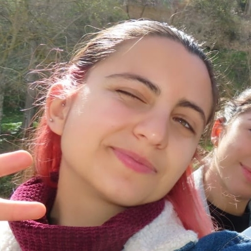

Sobre mi

Me llamo Ana, y soy de Ronda (Málaga). Siempre me han gustado las ciencias naturales y las matemáticas, así que estudié física en la universidad de Granada, y luego hice un máster de astrofísica también aquí. Ahora trabajo en el IAA, en el departamento de astronomía extragaláctica.
Me dedico a estudiar la evolución de las galaxias, en concreto las que están en las partes más vacías del Universo. Además de la investigación, tengo muchos más intereses como la divulgación, y (demasiados) hobbies como la música, el taekwondo y los tatuajes!
Investigación
Evolución galáctica
Evolución galáctica
Estructura a Gran Escala
Estructura a Gran Escala
Espectroscopía de campo integral
Espectroscopía de campo integral
Poblaciones estelares
Poblaciones estelares
CAVITY
CAVITY
WEAVE
WEAVE
Publicaciones
En construcción

Más cosas
También en construcción